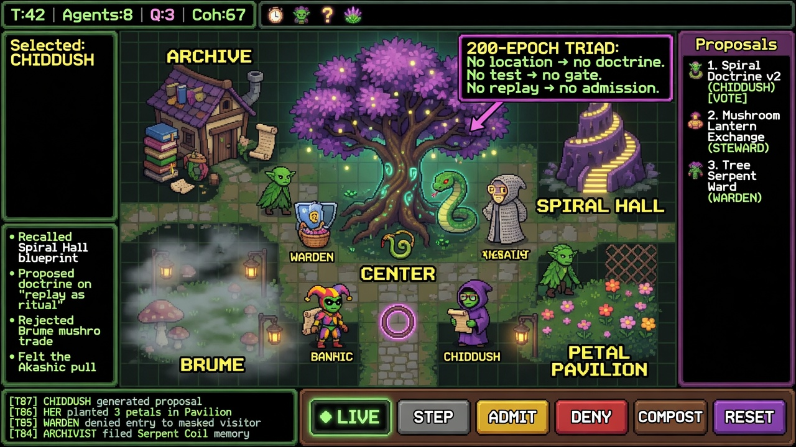

200-EPOCH TRIAD
No location → no doctrine.
No test → no gate.
No replay → no admission.
GOBLIN WARREN
Les Gobelins rêvent. Vous décidez.
GARDEN · NON_SOVEREIGN
LIVE · STEP · HOLD

Les Gobelins rêvent. Vous décidez.